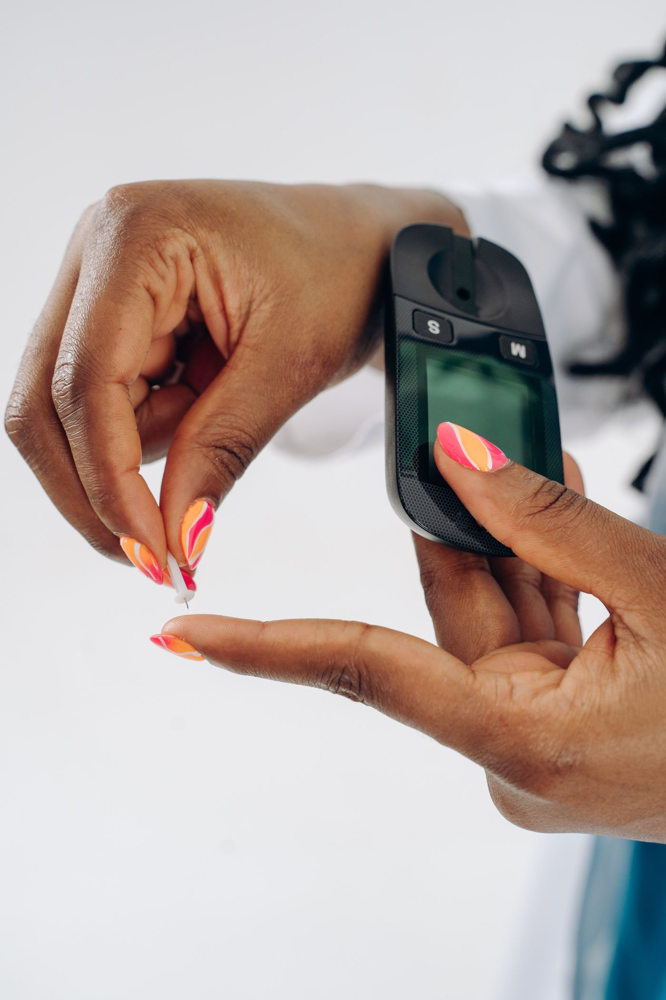

Home / Circles
Find the circle for your family.
Each circle is free, guided by clinicians and meets on WhatsApp, with weekly guidance, a monthly live session and recordings for members abroad. Join one or several.

Diabetes
Sugar Wise
Living well with type 2 diabetes, without giving up the food and life you love.
What you get
- Portion guides for rice, swallow and party food
- What your glucose and HbA1c numbers mean
- Foot, eye and kidney care
- Managing diabetes while travelling
Planned topics
- Eating well at owambe parties
- Understanding your HbA1c
- Fasting, feasts and your sugar levels
Stroke
Rise Again
Recovery and prevention for stroke survivors and the families who support them.
What you get
- Home exercises from physiotherapists
- Preventing a second stroke
- Speech, swallowing and daily tasks
- Support for family carers
Planned topics
- The first 90 days at home
- Blood pressure after a stroke
- Planning care from abroad
Circle lead: Dr Chris Anele, Consultant Neurosurgeon
Heart and blood pressure
Steady Beat
Keeping blood pressure and heart health under control, day by day.
What you get
- Checking your blood pressure at home
- Salt, stress and sleep
- Taking medicines consistently
- Warning signs that need a doctor
Planned topics
- Choosing a home blood pressure monitor
- Seasoning cubes, salt and your heart
- Why you shouldn't stop your tablets
Back, joints and bones
Move Well
Staying active with arthritis, back pain and after joint surgery.
What you get
- Safe movement at every age
- Recovery after hip or knee replacement
- Back pain at work and at home
- Preventing falls
Planned topics
- Five exercises for stiff knees
- Making your home safer
- Back pain: when to see a doctor
Menopause and midlife
The Change Opening soon
A private, women-only circle for perimenopause, menopause and after.
What you get
- Symptoms explained without shame
- Hot flushes, sleep and mood
- Heart and bone health after menopause
- Talking to your doctor and family
Planned topics
- Is it menopause? The signs
- Treatment options, explained
- Strong bones after 50
Myth or fact?
Things we hear every week.
Health messages get forwarded faster than they get checked. Select a statement to see what our clinicians say.
General information only. Talk to the doctor who knows you before changing any treatment.